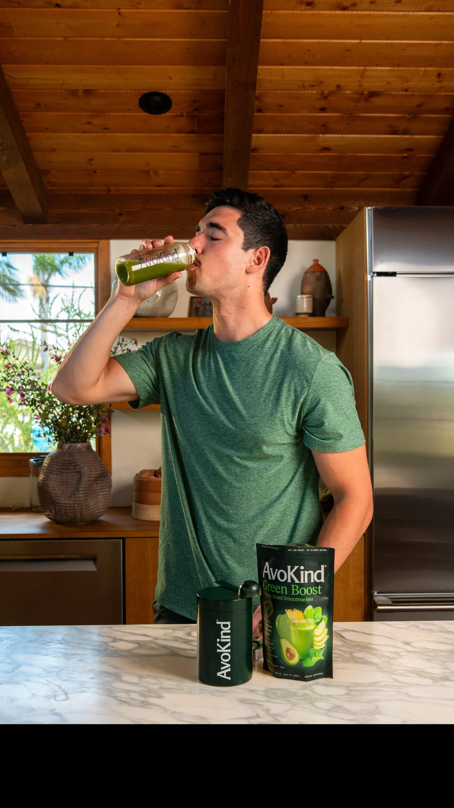
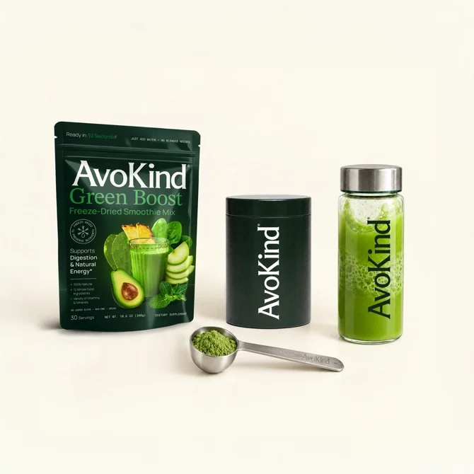

About AvoKind
Kind to you.
Built for real life.
AvoKind started with a simple question: how do you make whole-food nutrition easier to keep doing when mornings are busy and the blender is not happening?

Our why
Real food should not require a perfect routine.
Green Boost is made from recognizable fruits, vegetables, herbs and roots, with avocado at the center. The ingredients are freeze-dried so they can live in the pantry and mix into a drink in about thirty seconds.
We care about the details, but we do not want nutrition to feel mysterious. Our job is to tell you what is in the pouch, why it is there, what the evidence can actually support, and what the product tastes like in real life.
The product
Twelve foods.
One very short routine.
Pineapple, nopal, apple, cucumber, spinach, celery, avocado, cilantro, ginger, turmeric, mint and basil. Add liquid, stir or shake, and get on with the morning.
Meet Green Boost